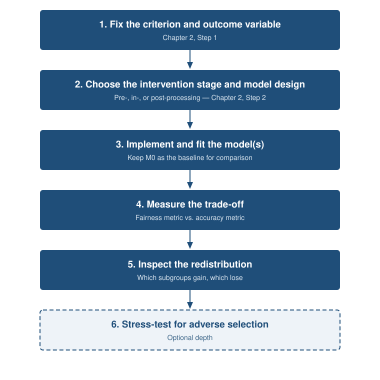
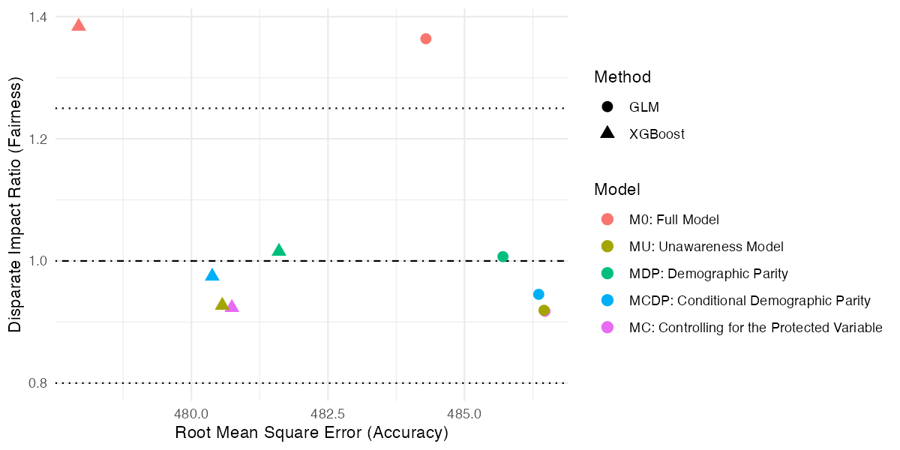
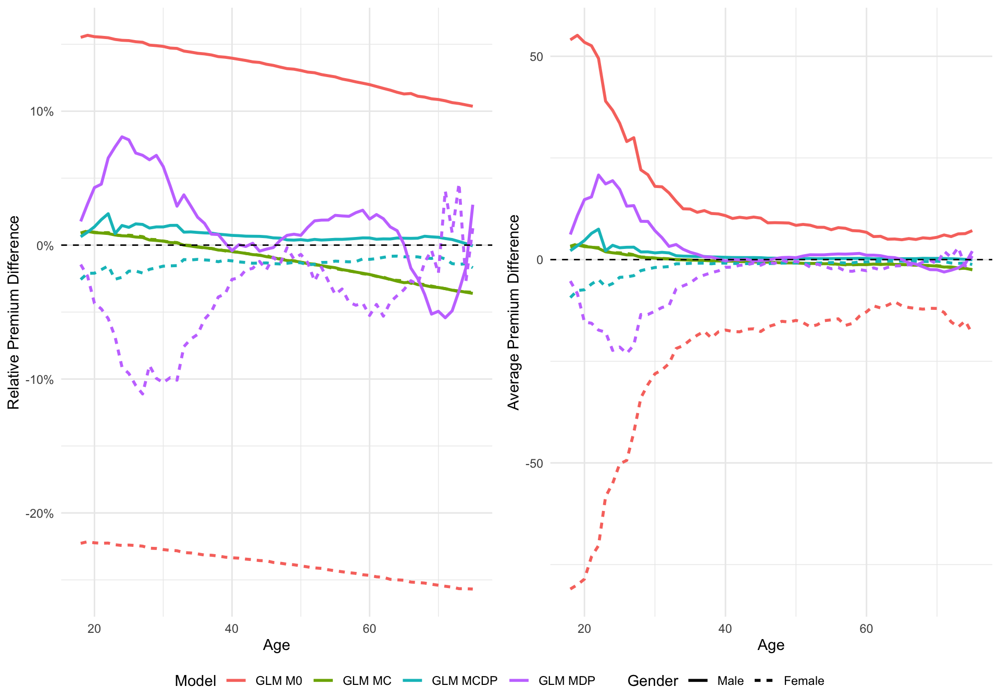

Fairness Practice
Slides — Chapter 3
Today’s roadmap
2-hour session, hands-on, five parts, five discussion breaks
| Time | Part |
|---|---|
| 0:00 – 0:15 | From principle to practice: the workflow |
| 0:15 – 0:40 | Fitting the models (GLM + XGBoost) |
| 0:40 – 1:05 | Results: fairness–accuracy trade-off |
| 1:05 – 1:15 | Break |
| 1:15 – 1:35 | Premium redistribution |
| 1:35 – 2:00 | Case study: COMPAS classification |
Learning objectives
- Operationalise a fairness criterion end-to-end: stage → fit → measure → interpret
- Implement MU, MDP, MCDP, MC (GLM and XGBoost) on real data
- Measure the fairness–accuracy trade-off
- Interpret outcome redistribution across groups
- Apply the same framework to binary classification (COMPAS)
- Apply and evaluate a post-processing correction
Part 1 — From principle to practice
The workflow
- Fix the criterion and the outcome variable (Ch 2, Step 1)
- Choose the intervention stage, pre/in/post-processing (Ch 2, Step 2)
- Implement and fit, keeping M0 as baseline
- Measure the trade-off, fairness metric vs. accuracy metric
- Inspect the redistribution, who gains, who loses
Same sequence, regardless of domain.
The workflow, visualised

Case study: fair pricing for motor insurance
- 100,000 French motor third-party-liability policies
- Response: pure premium = frequency × severity
- Protected attribute: Gender
- Legitimate: Age, Bonus, vehicle group, Density, Value
- Non-legitimate: InsuranceScore, a constructed credit-score-style proxy
The five models
| Model | Criterion | Approach |
|---|---|---|
| M0 | Baseline | Full model, includes Gender |
| MU | FTU (Fairness Through Unawareness) | Gender removed |
| MDP | Demographic parity | All predictors debiased |
| MCDP | Conditional DP | Only InsuranceScore debiased |
| MC | CPV (Controlling for Protected Variable) | Full model, average over Gender at scoring |
Each fitted with GLM (Poisson frequency + Gamma severity) and XGBoost.
💬 Discuss (3 min)
If your organisation had to deploy one of these five designs tomorrow —
which would you pick, and why?
Part 2 — Fitting the models
Pre-processing: the disparate-impact remover
For MDP and MCDP, adjust continuous predictor distributions so they no longer depend on Gender, preserving overall shape.
- MDP: apply to all predictors
- MCDP: apply only to InsuranceScore
GLM frequency–severity framework
\text{Pure Premium} = \text{Claim Frequency} \times \text{Claim Severity}
- Frequency: Poisson GLM, log link, exposure offset
- Severity: Gamma GLM, log link, claims-only data
Age entered as a flexible function (\text{Age}, \log(\text{Age}), \text{Age}^2, \text{Age}^3, \text{Age}^4).
Part 3 — Results
Fairness metrics
Disparate Impact Ratio (DIR): \dfrac{\mathbb{E}(\hat{Y} \mid X_P = b)}{\mathbb{E}(\hat{Y} \mid X_P = a)}
- Close to 1 = similar average premiums across groups
- Four-fifths rule: expect 0.8 – 1.25
RMSE (accuracy, lower = better)
Fairness–accuracy trade-off

Reading the plot
- M0 (red): most accurate, most unfair, above the four-fifths ceiling (DIR 1.36)
- MU (olive): moves enough to land inside the fair band, but overshoots past DIR = 1 (to 0.92), reversing which gender pays more
- MDP, MCDP, MC: land inside the fair band, small accuracy cost
- XGBoost (▲) retains most of its edge over GLM (●) at every fairness level
The cost of fairness here is real, but small.
💬 Discuss (3 min)
Removing Gender doesn’t just shrink the gender gap in MU. It reverses which gender pays more.
What does that tell you about unawareness alone?
Break — 10 min
Part 4 — Premium redistribution
Who gains and who loses?
Compare each fair model to MU (the industry-standard benchmark):
\text{Relative Premium Difference}_{i} = \frac{\bar{Y}_{\text{model},i} - \bar{Y}_{\text{MU},i}}{\bar{Y}_{\text{MU},i}}
Positive = fair model charges more than MU · Negative = charges less
Premium redistribution by age and gender

Reading the plot
- MDP: clearest transfer, raising the lower-charging group and lowering the higher-charging group across most ages
- MCDP: stays closest to MU, legitimate variables untouched, only the proxy is debiased
- MC: intermediate, reflecting only the gender coefficient in M0
The solidarity principle: stricter criteria imply more cross-subsidy between groups.
💬 Discuss (4 min)
MDP produces the largest transfer between groups.
Who would push back hardest against deploying MDP, and what would they say?
Part 5 — Case study: pretrial risk assessment (COMPAS)
The scenario
A US county is deciding whether to renew its contract for a pretrial risk-assessment tool that helps judges set bail and release conditions.
- Credited with reducing unnecessary pretrial detention
- An independent audit finds it over-flags Black defendants who do not reoffend
- The county’s Chief Public Defender must decide: does it meet a defensible fairness standard, and can it be corrected without becoming useless?
From pricing to classification
Everything above is regression (continuous cost). This decision is binary: release/detain, flag/clear.
The M0/MU framework applies unchanged. Only the model type and metrics change.
- N = 5,278 defendants (2,103 Caucasian; 3,175 African-American)
- Response: two-year recidivism · Protected attribute: ethnicity
- Base rates already differ sharply: 39.1% vs 52.3%
Fitting M0 and MU
m0 <- glm(Two_yr_Recidivism ~ Number_of_Priors + Age_Above_FourtyFive +
Age_Below_TwentyFive + Female + Misdemeanor + ethnicity,
data = compas_data, family = binomial)
mu <- glm(Two_yr_Recidivism ~ Number_of_Priors + Age_Above_FourtyFive +
Age_Below_TwentyFive + Female + Misdemeanor,
data = compas_data, family = binomial)M0 includes ethnicity directly. MU removes it, mirroring the real COMPAS tool.
Three fairness checks
| Criterion | M0 disparity ratio | MU disparity ratio |
|---|---|---|
| Demographic parity | 2.11 | 1.94 |
| Equal opportunity / TPR gap | 1.75 | 1.67 |
| Predictive rate parity / precision gap | 1.11 | 1.15 |
Unawareness barely moves anything. MU costs almost no accuracy (66.5% vs 66.8%). Every disparity ratio survives nearly unchanged.
Why do the three checks disagree?
Important
Demographic parity ignores the true outcome. It fully reflects the base-rate gap (39.1% vs 52.3%) plus any model unfairness. Precision conditions on the prediction, partly absorbing that same gap.
This is Chapter 2’s impossibility result, on real data: separation and sufficiency can’t both hold when base rates differ. Choosing a criterion is choosing how much of the base-rate difference counts as “unfairness” vs. “signal.”
💬 Discuss (4 min)
The three checks disagree sharply on how bad COMPAS’s disparity is.
If you were a judge deciding whether to use this tool, which check would you trust most, and why?
Post-processing: roc_pivot()
This reject-option correction relabels predictions within theta of the cutoff, giving the disadvantaged group’s borderline cases the benefit of the doubt.
- Mechanism: mirrors borderline probabilities across the cutoff (p \to 2\cdot\text{cutoff} - p) — a privileged borderline “favourable” case flips to unfavourable; a disadvantaged borderline “unfavourable” case flips to favourable. Confident predictions outside the band are untouched.
| theta | Accuracy | Demographic parity | TPR gap | Precision gap |
|---|---|---|---|---|
| 0 (MU) | 66.5% | 1.94 | 1.67 | 1.15 |
| 0.05 | 65.7% | 1.13 | 1.11 | 1.31 |
| 0.10 | 62.8% | 0.63 | 0.69 | 1.45 |
| 0.20 | 56.8% | 0.23 | 0.30 | 1.73 |
Reading the trade-off
Important
Pushing demographic parity and the TPR gap toward 1 does not leave precision alone — it actively worsens it (1.15 → 1.73). Past theta ≈ 0.10, the correction overshoots and reverses the disparity, at a steep accuracy cost.
No theta satisfies all three checks at once, because none exists while base rates differ. Post-processing lets you choose where on the curve to sit. It doesn’t let you escape the curve.
💬 Discuss (5 min) — wrap-up
Post-processing dials fairness up on one criterion, always at the cost of another.
If you had to pick a theta for a real deployed system, how would you decide where to stop?
Summary
- All four designs work on real data with modest accuracy loss, and the same workflow transfers to classification (COMPAS)
- Model choice should follow the regulatory criterion, not modelling convenience
- MDP: strongest group fairness, largest redistribution. MCDP: more targeted
- Unawareness (MU) is rarely sufficient alone
- Post-processing can hit one criterion, never all three at once
Recommended reading
Next class
Chapter 4 — Explainability Principles
Bring one prediction from today’s models you’d want explained to a policyholder.